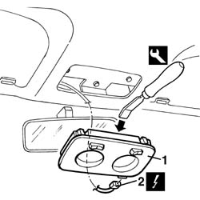
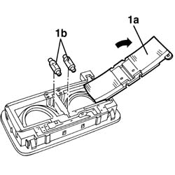

7040E40 modular front courtesy light - r r
- Path
- Procedures > 70 FITTINGS > 7040 BODYSHELL INTERIOR TRIMS AND FITTINGS > 7040E interior courtesy light system > 7040E40 modular front courtesy light - r r
- Kind
- repair procedure (removal / refitting; the operation number is the code)
- Applies to
- all engines; all production periods
- Interactive page
- https://sloeber94.github.io/elrnDB-a156/en/#/3238827
Applies to: all engines; all production periods
 Removing
Removing
 Refitting
Refitting1. Remove the overhead light, with the proper tool. Work with the tool from the side shown in the figure.
 | Name | Country |
|---|---|---|
- | Scraper blade | 1.823.014.000 |
2. Disconnect the electrical connection.
 | Name | Connector |
|---|---|---|
2 | Front courtesy light |

Applies to: all engines; all production periods
1. If necessary, remove the cover (1a) and pull out the bulbs (1b) from the rod springs.

Applies to: all engines; all production periods
Refitting
RemovingMake sure that the overhead light is not damaged.
If removed, install the bulbs in their seats and place the cover.
Connect the electrical connection.
Install the overhead light.
Check the functioning of the bulbs.
Topics linked from this page (1)
Topics that link to this page (11)
- 5505C41 cabin wiring - r r
- 5570T14 mobile phone hands-free system microphone - r r
- 7030B12 sliding roof (assembly) - r+r
- 7030B46 sun roof cables , one , lh or rh - r r
- 7030B50 sun roof guide , one , lh or rh - r r
- 7030B54 sun roof systems
- 7030B64 sun-roof control switch - r+r
- 7030B66 sun-roof movement ecu - r+r
- 7030B70 sun-roof control switch - r+r
- 7040H10 roof panel lining - r r
- 7040H16 roof panel lining - r r